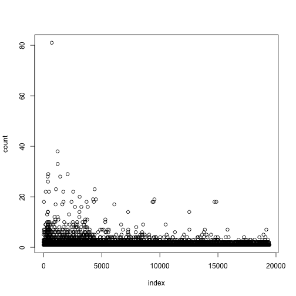

非結構化的新聞與股市資料!
ETL on R
Cheng Yu Lin (aha) and Jia Wei Chen (jiawei)
學習，實作，觀察 STEP3
匯入套件
require(RSelenium)
require(stringr)
require(xts)
require(reshape2)
CH1 抓取網路資料
What is HTML?
一種有結構的標記資料

Document Object Model (DOM)
html 呈現樹狀結構

樹狀結構的內容
- nodename
- attribute
- text
<a href = "www.meetup.com/Taiwan-R">
Taiwan R User Group Website
</a>
nodename : a
attribute : href with value "www.meetup.com/Taiwan-R"
text: "Taiwan R User Group Website"
xpath 常用到的操作
/ finds the root node
// selects from anywhere in the tree
selects current node
selects parent of current node
@ selects attributes
如果想抓 a 的話
we can use:
"/../body/div/a" or "//a"
如果指定 a 的 attribute 或 text
If we had '<a href = "www.meetup.com/Taiwan-R">stats</a>'
xpath 可以用 ...
"//a[@href = ’www.meetup.com/Taiwan-R’]" or "//a[text() = ’stats’]"
nodename : a
attribute : href with value "www.meetup.com/Taiwan-R"
text: "Taiwan R User Group Website"
打開 phantomjs
pJS <- phantom()
Sys.sleep(5) # give the binary a moment
remDr <- remoteDriver(browserName = 'phantomjs')
remDr$open()
抓 yahoo 房地產新聞 title
open url
url <- 'https://tw.news.yahoo.com/real-estate/archive/1.html'
remDr$navigate(url)
parse html
doc <- remDr$findElements("xpath", "//ul/li/div/div/h4/a")
titles <- sapply(doc, function(doc){
doc$getElementText()})
連續抓10頁
title <- list()
for(i in 1:10){
url <- sprintf('https://tw.news.yahoo.com/real-estate/archive/%d.html', i)
remDr$navigate(url)
doc <- remDr$findElements("xpath", "//ul/li/div/div/h4/a")
tmp <- sapply(doc, function(doc){
doc$getElementText()})
title <- append(title, tmp)
}
抓 yahoo 搜尋結果
open url
remDr$navigate("https://tw.yahoo.com/")
找出搜尋欄
webElem <- remDr$findElement(using = "id", "p")
輸入"房價", 並點擊搜尋
webElem$sendKeysToElement(list("房價", key = "enter"))
練習題
1. 請找出每個搜尋結果的 xpath
2. 請找出下一頁的 xpath
search_title <- list()
for(i in 1:10){
webElems <- remDr$findElements(using = "xpath", ____ )
resHeaders <- unlist(lapply(webElems, function(x){x$getElementText()}))
search_title <- append(search_title, resHeaders)
webElems <- remDr$findElement(using = "id", value = ____ )
webElems$clickElement()
}
解答
1. 每個搜尋結果的 xpath
"//li/div/div/h3/a"
2. 下一頁的 xpath
"pg-next"
保存/讀取 抓下來的數據
先將結果合併為表格
doc <- do.call(rbind, title)
寫入 / 讀回 數據
writeLines(doc, "news_yahoo.txt")
news_yahoo <- readLines('news_yahoo.txt')
匯入這次用的資料
鉅亨網 房地產新聞
setwd('~/R_ETL')
hourse_news <- readLines('jiawei/news.txt')
## Warning: incomplete final line found on 'jiawei/news.txt'
head(hourse_news)
## [1] "2014-06-24富邦人壽信義區再插旗 A25案172億元奪標"
## [2] "2014-06-24北市A25地上權案 富邦權利金172.88億元得標"
## [3] "2014-06-23房市管制 央行將化明為暗"
## [4] "2014-06-20史上頭一遭!大直新地王 1坪212萬＃超越信義之星直逼帝寶 中山新天價"
## [5] "2014-06-20大直帝景水花園實價首破200萬 北市3大豪宅板塊確立"
## [6] "2014-06-19樺福千金捷運宅標脫率89.4% 均價63萬元屬合理範圍"
CH2 字串處理
正規表達 介紹
x <- c("apples * 14", "flour", "sugar * 100", "milk * 3")
批配2個數字
str_extract(x, "\\d{2}")
## [1] "14" NA "10" NA
批配2~3個數字
str_extract(x, "\\d{2,3}")
## [1] "14" NA "100" NA
批配出現一次以上的a或p
str_extract(x, "[ap]+")
## [1] "app" NA "a" NA
也可以搭配{m,n}
str_extract(x, "[ap]{1,4}")
## [1] "app" NA "a" NA
練習題
猜猜看這要批配出什麼東西？
str_extract(x, "a[elp]+s")
## [1] "apples" NA NA NA
進階一點的正規表達
抽取 log訊息時很有用的 () 批配
可以把 match 的字儲存倒 \{n}
x <-"2014-06-24富邦人壽信義區再插旗 A25案172億元奪標"
patten <- "(\\d{4}-\\d{2}-\\d{2}).+(信義.?).+"
gsub(patten, "\\1, \\2", x)
## [1] "2014-06-24, 信義區"
練習題
請填入適當的 Patten
dates <- str_extract(hourse_news, ___)
titles <- str_replace(hourse_news, ___, ___)
hourse_news <- cbind(dates, titles)
## dates titles
## [1,] "2014-06-24" "富邦人壽信義區再插旗 A25案172億元奪標"
## [2,] "2014-06-24" "北市A25地上權案 富邦權利金172.88億元得標"
## [3,] "2014-06-23" "房市管制 央行將化明為暗"
清除符號的方法介紹
[[:punct:]] 表示標點符號
[[:blank:]] 表示分隔符號
str_replace_all(piece, "[[:punct:]]", "")
str_replace_all(piece, "[[:blank:]]", "")
如果想清除中文特殊符號 ...
這是 utf-8 編碼
punctuation <- "\u3002 \uff1b \uff0c \uff1a \u201c \u201d \uff08 \uff09 \u3001 \uff1f \u300a \u300b"
punctuation
## [1] "。 ； ， ： “ ” （ ） 、 ？ 《 》"
str_replace_all(piece, punctuation, "")
substr 用法
substr('富邦人壽信義區再插旗 A25案172億元奪標', 1, 4)
## [1] "富邦人壽"
substr('富邦人壽信義區再插旗 A25案172億元奪標', 5, 7)
## [1] "信義區"
練習題
請填入適當指令，呈現出下面使用範例
ngram <- function(sentence, n){
chunk <- c()
for(i in 1 : (nchar(sentence)-n+1)){
chunk <- append(chunk, substr(sentence, ___ , i+n-1))
}
return(chunk)
}
使用範例
ngram('富邦人壽信義區再插旗', 2)
## [1] "富邦" "邦人" "人壽" "壽信" "信義" "義區" "區再" "再插" "插旗"
請填入適當指令，呈現出下面使用範例
segmentWord <- function(word){
n <- nchar(word)-1
seg <- lapply(1: n, function(i){
w1 <- substr(word, 1, i)
w2 <- substr(word, ___ , n+1)
c(w1,w2)
})
return(seg)
}
segmentWord('富邦銀')
## [[1]]
## [1] "富" "邦銀"
##
## [[2]]
## [1] "富邦" "銀"
操作
把字段長度1~6都列舉出來看看
titles <- gsub("\\s", "", titles)
piece <- list()
piece[['1']] <- unlist(sapply(titles, ngram, 1, USE.NAMES = FALSE))
piece[['2']] <- unlist(sapply(titles, ngram, 2, USE.NAMES = FALSE))
piece[['3']] <- unlist(sapply(titles, ngram, 3, USE.NAMES = FALSE))
piece[['4']] <- unlist(sapply(titles, ngram, 4, USE.NAMES = FALSE))
piece[['5']] <- unlist(sapply(titles, ngram, 5, USE.NAMES = FALSE))
piece[['6']] <- unlist(sapply(titles, ngram, 6, USE.NAMES = FALSE))
操作
算 字段 出現次數
words_freq <- table(unlist(piece))
##
## 信義區 北市 房價 房市 上漲
## 8 81 38 33 2
操作
算出機率
N <- sum(words_freq[piece[['1']]])
words_prob <- words_freq / N
##
## 龍江 龍江路 龍江路土 龍江路土地 龍江路土地由
## 4.155e-06 4.155e-06 4.155e-06 4.155e-06 4.155e-06
paste, grep 用法
paste("富邦" ,"人壽", sep='')
## [1] "富邦人壽"
grep('富邦' , c('富邦金', '法人富邦', '台北富邦銀行'))
## [1] 1 2 3
grep('^富邦' , c('富邦金', '法人富邦', '台北富邦銀行'))
## [1] 1
grep('富邦$' , c('富邦金', '法人富邦', '台北富邦銀行'))
## [1] 2
練習題
請找出信義區 開頭/結尾 的字串
word <- '信義區'
BASE <- piece[[as.character(nchar(word)+1)]]
PATTEN1 <- paste( __ , __, sep = __ )
matchs1 <- grep( __ , __ , value = TRUE)
PATTEN2 <- paste( __ , __ , sep = __ )
matchs2 <- grep( __ , __ , value = TRUE)
練習題
請挑出單字長度 2~5 的 候選詞彙
words_2_5 <- unique(unlist(piece[ ___ ]))
## [1] "市前3" "房仲：網路" "林公園" "申報" "炒房！江揆"
## [6] "等房屋稅" "去年1" "？政院駁斥" "福地" "開案"
## [11] "逾5成" "、房價漲" "-17買頂" "北市新一期" "議避免"
單字 出現次數分佈

which 用法
practice <- sample(20,10)
practice > 12
## [1] FALSE FALSE FALSE FALSE TRUE TRUE FALSE TRUE FALSE FALSE
which(practice > 12)
## [1] 5 6 8
練習題
請透過 words_freq 找出 words_2_5 出現次數>2 的詞彙
words <- names(which( ___ ))
## piece_clean
## 地政士法覆 政士法覆議 ：豪宅交易 14-01 4-01- 25日前提
## 7 7 3 3 3 3
CH3 進行聚合
前面 segmentWord 練習題的應用
ex. 算'子字串'之間是否獨立
cohesion <- function(word){
seg <- segmentWord(word)
val <- sapply(seg, function(x){
f_word <- words_freq[word]
f_x1 <- words_freq[x[1]]
f_x2 <- words_freq[x[2]]
mi <- log2(N) + log2(f_word) - log2(f_x1) - log2(f_x2)
return(mi)
})
return (min(val))
}
進行計算
cohesion_val <- sapply(words, cohesion, USE.NAMES = FALSE)
names(cohesion_val) <- words
coh_words <- names(which(cohesion_val > 10))
## 賃需求 青睞 邦人壽 完成募 完成募集 揭露 募集 共識
## 15.55 15.88 15.88 15.88 15.88 15.88 15.88 16.29
## 汐止 影響
## 16.29 16.29

計算單字左右兩邊可以串接其他單字的程度
disorder <- function(word){
BASE <- piece[[as.character(nchar(word)+1)]]
PATTEN1 <- paste("^", word, sep = '')
matchs1 <- grep(PATTEN1, BASE, value = TRUE)
freq1 <- table(matchs1)
pre <- mean(-log2(freq1/sum(freq1)))
PATTEN2 <- paste(word, "$", sep = '')
matchs2 <- grep(PATTEN2, BASE, value = TRUE)
freq2 <- table(matchs2)
post <- mean(-log2(freq2/sum(freq2)))
index <- is.na(c(pre, post))
condition <- any(index)
return(ifelse(condition, c(pre, post)[!index], min(pre, post)))
}
進行計算
disorder_val <- sapply(coh_words, disorder, USE.NAMES = FALSE)
names(disorder_val) <- coh_words
## 土地 -0 捷運 信義 實價登錄 去年 雙北 實價
## 3.000 3.188 3.233 3.238 3.295 3.298 3.379 3.394
## 億元 交易 住宅 店面 豪宅 每坪 北市
## 3.400 3.434 3.788 4.059 4.232 4.302 5.160
單字兩側的混亂程度分佈

混亂程度的例子
兩側混亂程度高的字
## [1] "土地" "-0" "捷運" "信義" "實價登錄" "去年"
## [7] "雙北" "實價" "億元" "交易" "住宅" "店面"
## [13] "豪宅" "每坪" "北市"
兩側混亂程度低的字
## [1] "富邦" "邦人" "人壽" "義區" "地上" "上權" "權案" "權利" "利金" "義之"
## [11] "之星" "下半" "樂觀" "新隆" "隆國"
練習題
請用 which 挑出 disorder_val 混亂程度 >1 的單字
dis_words <- names( ___ )
## [1] "合宜住宅" "店面租賃" "張盛和：" "房市量縮" "北市2月"
## [6] "住宅價格" "房價年漲" "房價漲幅" "豪宅交易" "實價登錄"
## [11] "中山區最" "店面交易" "180萬" "商用大樓" "價潛力區"
## [16] "地政士法" "月實價登錄" "信義計畫區" "：豪宅交易" "25日前提"
str_count 用法
算 a, e 出現次數
fruit <- c("apple", "banana", "pear", "pineapple")
lapply(c("a", "e"), function(x){
str_count(fruit, x)
})
## [[1]]
## [1] 1 3 1 1
##
## [[2]]
## [1] 1 0 1 2
練習題
請算出 dis_words 裡面每個單字在新聞 title 的出現次數
tmp <- lapply( __ , function(word){
str_count( __ , word)
})
words_tbl <- do.call(cbind, tmp)
colnames(words_tbl) <- dis_words
## 文山區 店面租賃 .5% 增近 最熱 店面交易 逾4成 單價
## [1,] 0 0 0 0 0 0 0 0
## [2,] 0 0 0 0 0 0 0 0
## [3,] 0 0 0 0 0 0 0 0
## [4,] 0 0 0 0 0 0 0 0
## [5,] 0 0 0 0 0 0 0 0
## [6,] 0 0 0 0 0 0 0 0
xts 用法
x <- matrix(1:10, 2,2)
y <- Sys.Date() + 1:2
xts(x,y)
## [,1] [,2]
## [1,] 1 3
## [2,] 2 4
## [1] "2014-08-24" "2014-08-25"
## [,1] [,2]
## 2014-08-24 1 3
## 2014-08-25 2 4
練習題
請將 words_tbl 轉換成 xts 格式
words_tbl_xts <- xts( ___ , as.POSIXct(dates))
## 信義 億元 北市 直逼 中山 實價 豪宅 捷運
## 2014-01-02 0 0 0 0 0 0 0 0
## 2014-01-02 0 0 1 0 0 0 0 0
## 2014-01-02 0 0 0 0 0 0 0 0
## 2014-01-02 0 0 1 0 0 0 0 0
## 2014-01-03 0 0 0 0 0 0 0 0
## 2014-01-03 0 0 1 0 0 0 0 0
轉成 xts 格式的好處
可以選取時間
words_tbl_xts["2014-01-18/2014-01-20", 100:110]
## 預計 內湖 居住 春節 文山 總銷 點閱 覆議 政院 江揆 推案
## 2014-01-19 0 0 0 0 0 0 0 0 0 0 0
## 2014-01-20 0 0 0 0 0 0 0 1 1 0 0
## 2014-01-20 0 0 0 0 0 0 0 0 0 1 0
## 2014-01-20 0 0 0 0 0 0 0 1 1 1 0
## 2014-01-20 0 0 0 0 0 0 0 1 1 1 0
## 2014-01-20 0 0 0 0 0 0 0 0 0 0 0
## 2014-01-20 0 0 0 0 0 0 0 1 1 0 0
轉成 xts 格式的好處
可以對時間區間做運算, 例如 將 1~2月 每個禮拜的出現次數做加總
ep.weeks <- endpoints(words_tbl_xts, "weeks", k=1)
count.weeks <- period.apply(words_tbl_xts, ep.weeks, FUN=colSums)
count.weeks["2014-01/2014-02", 100:110]
## 預計 內湖 居住 春節 文山 總銷 點閱 覆議 政院 江揆 推案
## 2014-01-06 0 0 0 0 0 1 0 0 0 0 0
## 2014-01-10 0 0 0 0 0 1 0 0 0 0 2
## 2014-01-20 0 0 0 1 0 0 0 4 4 3 0
## 2014-01-27 0 0 0 0 3 0 0 5 2 2 1
## 2014-01-28 0 0 1 0 0 0 0 2 2 0 0
## 2014-02-07 0 0 0 2 2 0 2 0 0 0 0
## 2014-02-17 0 0 0 0 0 0 1 0 0 0 0
## 2014-02-24 0 1 0 0 1 2 0 0 0 0 0
練習題
請計算每個單字在 1~5 月的 每個月出現次數
ep.month <- endpoints(words_tbl_xts, ___ , k=1)
count.month <- period.apply(words_tbl_xts, __ , FUN=colSums)
count.months[ ___ , 100:110]
## 預計 內湖 居住 春節 文山 總銷 點閱 覆議 政院 江揆 推案
## 2014-01-28 0 0 1 1 3 2 0 11 8 5 3
## 2014-02-27 0 3 0 3 3 2 3 0 0 0 0
## 2014-03-31 3 1 3 0 0 0 0 0 0 0 0
## 2014-04-30 0 0 0 0 0 0 0 0 0 0 0
## 2014-05-30 0 0 0 0 0 0 0 0 0 0 0
CH4 (番外篇) 抓股票找狀態
這一章節可以自己操作
自行操作
下載營建股 股票指數
營建股清單
library('quantmod')
f = file('~/stock.csv', encoding='utf-8')
stock <- read.csv(f, stringsAsFactors=FALSE)
stock_no <- stock[,1]
stock_name <- stock[,2]
stock_code <- paste(stock_no, '.TW', sep='')
自行操作
開始下載
getSymbols(stock_code, env=mystocks, from="2014-01-01", to="2014-07-02")
mystocks <- do.call(cbind,eapply(mystocks, Cl))
names(mystocks) <- stock_name
saveRDS(mystocks, "mystocks.rds")
自行操作
算出每支股票的 平均漲跌
mystocks <- readRDS('jiawei/mystocks.rds')
mystocks.return <- diff(mystocks, 1) / mystocks
## 華友聯 名軒 寶徠 潤隆 國建
## 2014-01-01 NA NA NA NA NA
## 2014-01-02 0.004545 0.005310 -0.008333 -0.006390 -0.001631
## 2014-01-03 -0.013825 -0.005338 0.012346 -0.006431 -0.003273
## 2014-01-06 -0.004630 -0.008977 -0.021008 -0.054237 -0.006590
## 2014-01-07 0.000000 0.003578 0.004184 0.018303 0.017799
## 2014-01-08 0.022624 0.001786 -0.012712 0.003317 0.006431
全部平均來看漲幅
mystocks.return_all <- apply(mystocks.return[-1,], 1, mean)

自行操作
找出股票漲跌的五個狀態
漲多,、漲少,、不變,、跌少,、跌多
利用 kmeans 來判斷
cl <- kmeans(mystocks.return_all, 5)
## 2014-01-02 2014-01-03 2014-01-06 2014-01-07 2014-01-08
## 5 1 4 2 5
自行操作
對狀態做排序
s1 = c()
for(i in 1:5){
i = as.character(i)
s1[i] <- mean(mystocks.return_all[cl$cluster == i])
}
s1 <- sort(s1)
## 4 1 5 3 2
## -0.022497 -0.005096 -0.001468 0.001153 0.007018
自行操作
把狀態換個名字
s2 = c('跌多','跌少','不變','漲少','漲多')
for(i in 1:5){
cl$cluster <- gsub(names(s1)[i], s2[i], cl$cluster)
}
return.status <- data.frame(cluster=cl$cluster, count=rep(1, length(cl$cluster)))
## cluster count
## 1 不變 1
## 2 跌少 1
## 3 跌多 1
## 4 漲多 1
## 5 不變 1
## 6 跌少 1
CH5 表格操作與轉換
注意
後面只是整理出表格
有看似任何分析方法請不要直接拿來使用
可以合併在一起看 ?
關鍵字出現的次數
## 預計 內湖 居住 春節 文山 總銷
## [1,] 0 0 0 0 0 0
## [2,] 0 0 0 0 0 0
## [3,] 0 0 0 0 0 0
## [4,] 0 0 0 0 0 0
## [5,] 0 0 0 0 0 0
## [6,] 0 0 0 0 0 0
股市漲跌的狀態
## cluster count
## 1 不變 1
## 2 跌少 1
## 3 跌多 1
## 4 漲多 1
## 5 不變 1
## 6 跌少 1
可以把5個漲跌狀態變成欄位 ?
原本的表格
## cluster count
## 1 不變 1
## 2 跌少 1
## 3 跌多 1
## 4 漲多 1
## 5 不變 1
## 6 跌少 1
希望的表格
## return_date 不變 漲多 漲少 跌多 跌少
## 1 2014-01-02 1 0 0 0 0
## 2 2014-01-03 0 0 0 0 1
## 3 2014-01-06 0 0 0 1 0
## 4 2014-01-07 0 1 0 0 0
## 5 2014-01-08 1 0 0 0 0
## 6 2014-01-09 0 0 0 0 1
melt, dcast 用法
先準備一份資料
x = matrix(letters[1:12], 4,3)
x <- as.data.frame(x)
names(x) <- c('w1', 'w2', 'w3')
## w1 w2 w3
## 1 a e i
## 2 b f j
## 3 c g k
## 4 d h l
melt, dcast 用法
x.m <- melt(x, id.vars = c('w1', 'w2'))
## w1 w2 variable value
## 1 a e w3 i
## 2 b f w3 j
## 3 c g w3 k
## 4 d h w3 l
x.dc <- dcast(x.m, w1+w2 ~ variable)
## w1 w2 w3
## 1 a e i
## 2 b f j
## 3 c g k
## 4 d h l
練習題
請利用 return_date 和 cluster 整理出下面表格
return_date <- names(mystocks.return_all)
return.status <- dcast(return.status, ___ ~ ___ , fill = 0)
## return_date 不變 漲多 漲少 跌多 跌少
## 1 2014-01-02 1 0 0 0 0
## 2 2014-01-03 0 0 0 0 1
## 3 2014-01-06 0 0 0 1 0
## 4 2014-01-07 0 1 0 0 0
## 5 2014-01-08 1 0 0 0 0
## 6 2014-01-09 0 0 0 0 1
將 return.status 轉換成xts格式
return.status.xts <- xts(return.status[,-1], as.POSIXct(return_date))
## 不變 漲多 漲少 跌多 跌少
## 2014-01-02 1 0 0 0 0
## 2014-01-03 0 0 0 0 1
## 2014-01-06 0 0 0 1 0
## 2014-01-07 0 1 0 0 0
## 2014-01-08 1 0 0 0 0
## 2014-01-09 0 0 0 0 1
merge.xts 用法
x <- xts(3:7, Sys.Date()+3:7)
y <- xts(1:5, Sys.Date()+1:5)
merge.xts(x,y)
## x y
## 2014-08-24 NA 1
## 2014-08-25 NA 2
## 2014-08-26 3 3
## 2014-08-27 4 4
## 2014-08-28 5 5
## 2014-08-29 6 NA
## 2014-08-30 7 NA
練習題
把關鍵字和股票漲跌依據時間做合併, 欄位名稱 : words_tbl_xts, return.status.xts
final_tbl <- merge.xts( ___ , ___ , fill=0)
names(final_tbl) <- c(dis_words, names(return.status[,-1]))
## 信義計畫區 ：豪宅交易 25日前提 不變 漲多 漲少 跌多 跌少
## 2014-01-02 0 0 0 1 0 0 0 0
## 2014-01-02 0 0 0 0 0 0 0 0
## 2014-01-02 0 0 0 0 0 0 0 0
## 2014-01-02 0 0 0 0 0 0 0 0
## 2014-01-03 0 0 0 0 0 0 0 1
## 2014-01-03 0 0 0 0 0 0 0 0
算 彼此之間的相關度
計算 共變異矩陣
tbl_cov <- cov(final_tbl)
計算 曼哈頓距離
d <- dist(t(final_tbl), method = "manhattan")
d2 <- as.matrix(d)
和漲跌狀態有關的關鍵字
和跌多狀態較接近的關鍵字
score <- sort(d2[,'跌多'])
words <- names(score)
head(data.frame(words), 10)
## words
## 1 跌多
## 2 總銷
## 3 直逼
## 4 公園
## 5 招標
## 6 漲逾
## 7 商圈
## 8 標售
## 9 增加
## 10 現身
和漲多狀態較接近的關鍵字
score <- sort(d2[,'漲多'])
words <- names(score)
head(data.frame(words), 10)
## words
## 1 漲多
## 2 增加
## 3 換屋
## 4 可以
## 5 重劃
## 6 所得
## 7 網路
## 8 最受
## 9 點閱
## 10 推案
整理一下 ...
kw <- list()
for(col in c('跌多','跌少','不變','漲少','漲多')){
kw <- cbind(kw, names(head(sort(d2[,col]), 10)))
}
## [,1] [,2] [,3] [,4] [,5]
## [1,] "跌多" "跌少" "不變" "漲少" "漲多"
## [2,] "總銷" "標脫" "現身" "合宜住宅" "增加"
## [3,] "直逼" "標售" "下半年" "漲逾" "換屋"
## [4,] "公園" "萬華" "售屋" "增近" "可以"
## [5,] "招標" "新隆國宅" "房地產" "汐止" "重劃"
## [6,] "漲逾" "直逼" "商圈" "中和" "所得"
## [7,] "商圈" "招標" "子」" "占比" "網路"
## [8,] "標售" "買賣" "置產" "置產" "最受"
## [9,] "增加" "增近" "換屋" "網路" "點閱"
## [10,] "現身" "中和" "重劃" "成交量" "推案"
漲跌狀態對應的關鍵字, 出現在哪些新聞標題？ (1/2)
index <- str_extract(titles, "重劃|所得")
titles[!is.na(index)]
## [1] "政府入駐重劃區房價加分信義計畫區價差55.86%最大"
## [2] "北市買房要不吃不喝15年所得逾6成都拿去繳房貸"
## [3] "偏愛新北重劃區女性購屋佔5成高出男性48.8%"
## [4] "財長：豪宅交易設算所得比率仍未定2014-01-08財長：豪宅交易設算所得比率仍未定"
## [5] "中市13期重劃第4標動土最後一塊拼圖到位"
漲跌狀態對應的關鍵字, 出現在哪些新聞標題？ (2/2)
index <- grepl("總銷|招標", titles)
titles[index]
## [1] "北市銅山街地上權案招標權利金底價6.8億"
## [2] "施工黑暗期捷運松山線店面仍漲7%最高每坪140萬2014-03-1612宗國有地地上權招標總底價54.7億元"
## [3] "去年全台店面總銷金額破千億北市247.5億居冠"
## [4] "店面熱！全台去年總銷破千億元北市占比達23.2%"
## [5] "台糖招商文山區地上權招標權利金底價2.56億"
## [6] "2013全台店面交易可望破千億北市總銷占22%居冠"
## [7] "北市店面夯去年前三季占全台總銷22%"
練習題
請利用 grepl 與 & 找出同時出現 '捷運' 與 '房價' 的 titles
index <- grepl( __ ) _?_ grepl( __ )
titles[index]
## [1] "板橋捷運宅房價續揚新巨蛋最高每坪79.4萬元"
## [2] "雙學區+捷運通車效應敦化國中小學區宅房價年漲15.1%2014-05-18雙學區+捷運通車效應敦化國中小學區宅房價年漲15.1%"
## [3] "捷運松山線年底開通捷運站周邊房價近一年漲14%"
一些後續應用
既然已經整理出表格了, 就可以...
拿去跑各種奇奇怪怪的迴歸分析 / 機器學習
做降維(mds, pca, svd ...)，然後視覺化
以上請期待下一輪 R tutorail
降維視覺化的小範例
fit <- cmdscale(d2, eig = TRUE, k=2)
x <- fit$points[,1]
y <- fit$points[,2]
plot(x, y, xlab="Coordinate 1", ylab="Coordinate 2", type = "n")
text(x, y, labels = row.names(t(final_tbl)), cex=.7)